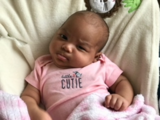
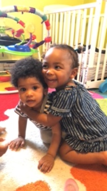
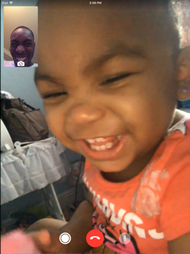
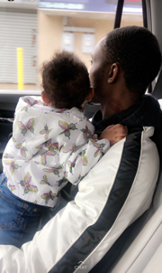
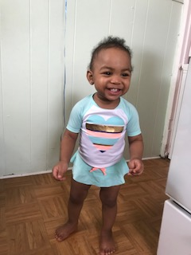
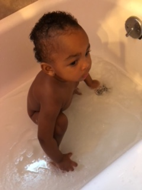
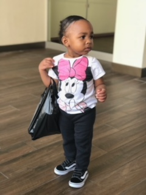

Amaya Nova Blyther Was Born Febuary 23,2017 at 2:43pm In Long Island Jewish Hospital
Amaya Is My Very first Child. At First I Thought Things Would Be Hard But Raising Her Has Been More Of An Adventure Than Anything Else.
Here Is A Picture Of Amaya And Her Little Cousin Noah. Amaya Loves Him Very Much And Loves To Play With Him At The Daycare
Here Is A FaceTime Call Between Me And Amaya. This Picture Is Just A Smidge Of The Joy She Brings Me. Amaya Really Is My Universe.
One Of Amaya's Favorite Things To Do Is Look Out The Window During Car Rides. She Would Wave At Every Single Person She Saw Like She'd Already Meet Them
She Was Born A Little Pre-mature but in perfect Health And Ready To Take On The World.
Once Amaya Started To Walk She Quickly Developed A Super Fun/Bright Energy And As Soon As She Smiles It Compleatly Mealts People To Putty.
At First Like Lots Of Other Babies, Amaya Didnt Like Bathtime. But After A While She Got Over Her Fear Of Water And Would Have Fun With Bathtime :)
Time Really Does Fly When Watching Your Little One Grow. Here In This Picture You Can See Amaya Is Holding A Plastic Bag As If It Were a Purse!